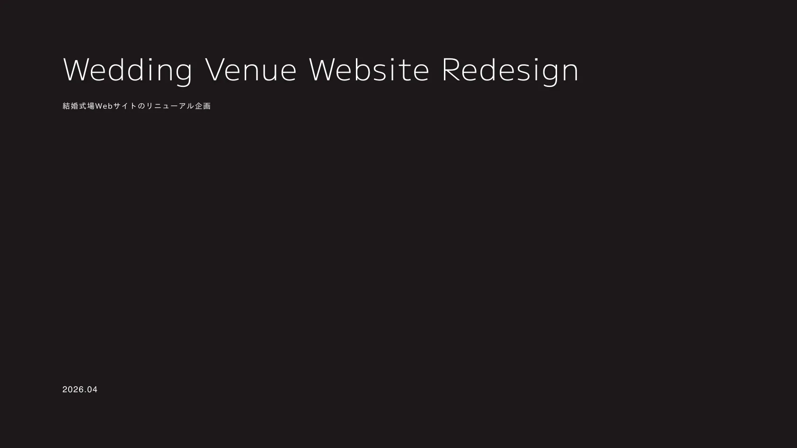
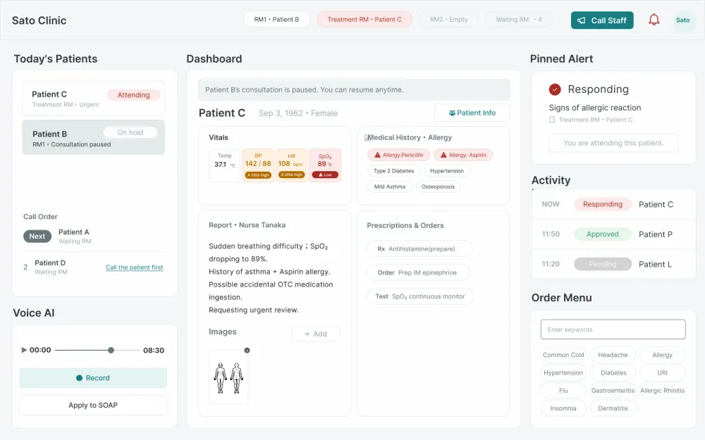
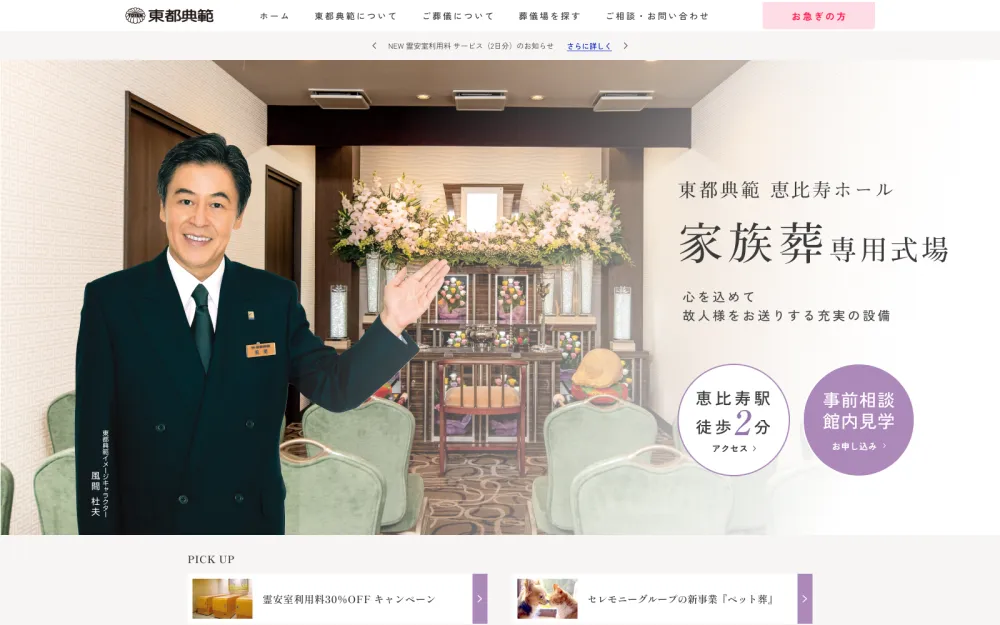
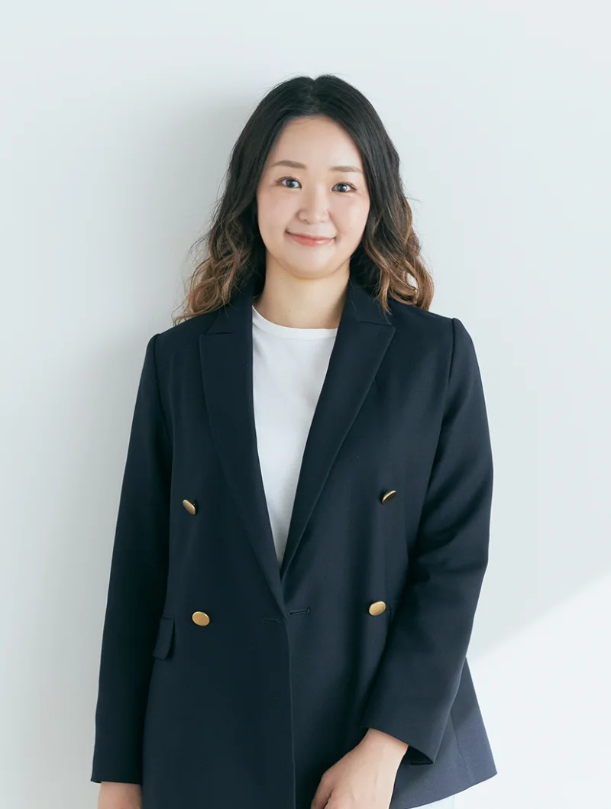

法人営業で身についた課題解決の考え方を軸に、UXの設計を実践しています。

assets/wedding-hero.webp を置くと表示されます原因を「着地後3秒の直帰」と特定し、心理障壁を解除する情報設計へ再構築した提案。

assets/clinic-hero.webp を置くと表示されます伝達ミスと見落としを「静かな同期」で構造的に防ぐ、医師×看護師のためのUX設計。

assets/tohto-tenpan-hero.webp を置くと表示されます既存ページを活かしながら、緊急度別の導線と不安を解消する情報を加えて見直した。

営業／営業企画を経験したのち、オンラインの顧客体験設計に興味を持ち、Webデザインに転身しました。数字の背景にある課題を見つけて解く、という営業時代からの習慣をデザインの起点にしています。
大切にしているのは、課題を1つに絞り込み、手を動かしながら答えを見つけていくこと。
ビジネス指標から逆算し、解くべき課題を1つに絞る。営業経験に根ざした事業視点が強み。
顧客心理をフェーズに分解し、各段階の本音に対応する施策を1対1でマッピングする。
結果→実証→信頼→安心の情報設計で、迷いなく行動へ導く画面とワイヤーを設計する。
UX ── 今、深めている領域